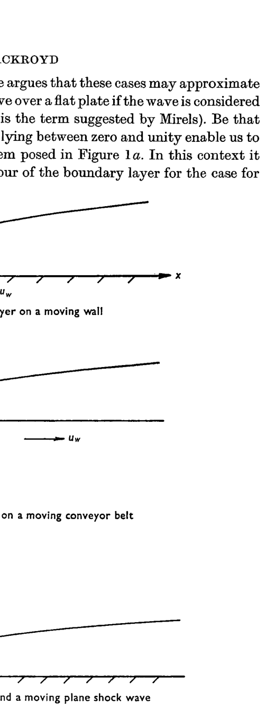
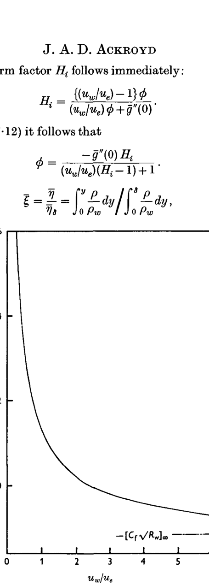
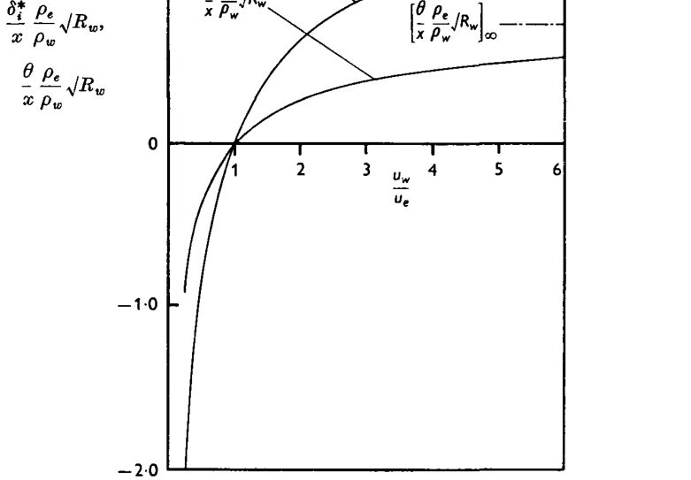
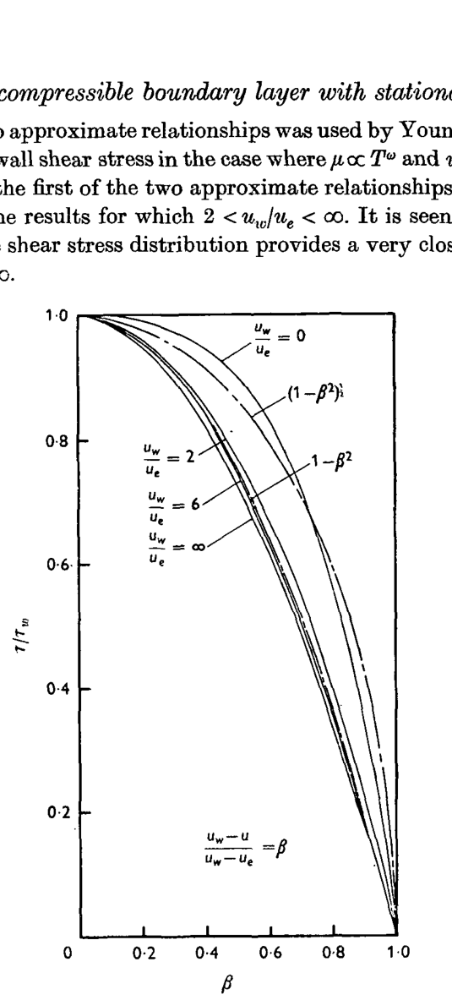

01中文摘要
解析研究自由流速度为零时运动平壁上层流可压缩边界层的增长，边界层原点相对观察者固定；结果与自由流具有有限速度的已有解比较。该流动对应运动平面激波掠过平板后的边界层，文中论证零自由流情形可为激波诱导层流边界层的位移厚度、动量厚度等参数提供界值。计算覆盖壁面/外部流速比从 0 到 (γ+1)/(γ−1) 的范围。
02阅读说明
理论/解析研究（层流可压缩边界层相似解）。材料为 18 页期刊全文（Proc. Camb. Phil. Soc. 63 (1967), pp. 871–888），bundle 文本层对公式损坏严重，已回读原 PDF 第 4–5、8–11 页核对 (2-8)–(2-21)、(4-1)–(5-11)、(6-1)–(7-11)；第 12 页 (7-12)、(7-16) 与图 2–4 的曲线读数受限于材料未逐一确认。正文推导链完整，Table 1/Table 2 数值可读，图件为 1967 年扫描曲线图。全文读完，无截断。 文章类型：期刊
03一句话核心与三句话摘要
对移动壁面、外部静止气体中的层流可压缩边界层作相似解，给出壁/外流速度比趋于无穷时的厚度与摩阻渐近值。
- 作者研究均匀移动平板上、外部气体静止、边界层原点相对观察者固定的层流可压缩边界层，用以界定移动激波后边界层参数的界值。 原文明确
- 采用相似变换把动量方程化为 Blasius 方程，用 g(η)=Σaₙe^(−nαη) 的指数级数求解（取前 17 项系数），并用 Mirels 的有限外流速度结果作对照。 AI概括
- u_w/u_e→∞ 时 C_f√R_w→−0.8874、δ*(ρ_e/ρ_w)√R_w/x→1.6148、θ(ρ_e/ρ_w)√R_w/x→0.7278、H_i→2.219、f→6.187，且 u_w/u_e>2 后各参数变化不大，可对激波管工况取平均值。 原文明确
04核心内容清单
| 要点 | 类型 | 重要性 | 原文依据 | 属性 |
|---|---|---|---|---|
| 问题设定为均匀移动平面、外部气体静止、边界层原点相对观察者固定在壁面驻点；对应移动平面激波后的边界层（Fig.1c），可为激波诱导层流边界层提供参数界值。 | 问题与物理图像 | A | p.871 Summary、Fig.1；p.871–872 | 原文明确 |
| 激波诱导流中壁速/外流速度比上限为 (γ+1)/(γ−1)：双原子气体为 6、单原子气体为 4，u_w/u_e→∞ 可解释为 γ→1 的无限强激波渐近情形。 | 参数范围 | A | p.871–872 | 原文明确 |
| 以 u_w 为参考速度作相似变换，动量方程严格化为 Blasius 方程 g‴+gg″=0，边界条件 g(0)=0、g′(0)=1、g′(∞)=0。 | 控制方程 | A | (2-8)–(2-11)，p.874 | 原文明确 |
| 能量方程化为 (2-13)，并按 Mirels 方法分解为无热流解与热流解的线性叠加，σ=1 时 r=g′(2−g′)、s=g′。 | 能量方程 | A | (2-13)–(2-21)，p.874–875 | 原文明确 |
| 用 g=Σaₙe^(−nαη) 的指数级数求解，得 α=1.14277、α₁=−1.50709、Z=−1.31880，前 17 项足以满足 g′(∞)=0，数值积得分 g″(0)=−0.6276。 | 求解方法 | A | (3-1)–(3-8)、Table 1、Table 2，p.875–877 | 原文明确 |
| 级数收敛性未被证明，作者明确承认“attempts to demonstrate convergence have failed”，解的可信度建立在假设收敛并回代边界条件之上。 | 方法局限 | A | p.876 | 原文明确 |
| C_f√R_w=−0.8874（R_w=u_wx/ν_w，C_f=2τ_w/(ρ_wu_w²)），负号源于壁面拖动气体做功；σ=1 时 (C_fR_w)/N_u=2。 | 壁面量 | A | (4-1)–(4-6)，p.877–878 | 原文明确 |
| δ* 与 θ 采用相对壁面的速度定义，并由 Pohlhausen 四次速度型给出 η_δ=−2/g″(0)、f=δ₁/δ 的封闭表达式。 | 厚度定义 | A | (5-1)–(5-11)，p.878–879 | 原文明确 |
| u_e=0 的渐近值：δ*(ρ_e/ρ_w)√R_w/x=1.6148、θ(ρ_e/ρ_w)√R_w/x=0.7278、H_i=2.219、f=6.187。 | 定量结果 | A | (6-6)–(6-9)，p.880 | 原文明确 |
| 可压缩性通过恢复温度抬高位移厚度与形状因子：H=(T_e/T_w)H_i+((γ−1)/2)(u_w/u_e)²，H_i 只是不可压部分。 | 可压缩性修正 | A | (5-5)(5-6)，p.879 | 原文明确 |
| 与 Mirels 结果对比采用以 u_w−u_e 为特征速度的 R_w=(u_wx/ν_w)(1−u_e/u_w)² 和 C_f=2τ_w/[ρ_w(u_w−u_e)²]，使 u_e→0 时退化为本文定义。 | 对比框架 | B | (7-6)(7-7)，p.881 | 原文明确 |
| u_w/u_e 从 2 增到 ∞ 时各边界层参数变化不大，故激波管工作中可取平均值；Bernstein 取 u_w/u_e=0 的 H_t、f 偏高，Young 剪应力式不宜外推到全部速度比。 | 工程推论 | B | p.885–886；Fig.2–5 | 原文明确 |
05引言：研究问题与领域缺口
问题：均匀移动平板、外部气体静止（或具有任意速度 u_e）时层流可压缩边界层的生长，且边界层原点固定在移动壁面的某一驻点上（p.871，Fig.1a）。物理对应为传送带上被固定在出发点的边界层（Fig.1b）以及恒定速度平面激波掠过平板时、随激波观察到的边界层（Fig.1c，p.871）。缺口：Mirels 从移动激波视角研究过该问题，指出激波诱导流中壁速/外流速度比被限制在很小范围；对双原子气体该比值可在 1 与 6 之间、单原子气体在 1 与 4 之间（p.871–872），且 Mirels 只处理了 0≤u_w/u_e≤1 的补充情形，缺少外部气体完全静止（u_w/u_e→∞）这一极限。目标：求出该极限下的相似解与边界层积分量，并与 Mirels 的有限 u_e 结果在统一的无量纲框架下比较，从而为激波诱导层流边界层提供参数界值（p.871 Summary, p.872–873）。假设在文中未以独立条目列出，但由第 2 节公式化过程可读出：二维定常层流、零压力梯度、μ∝T、c_p=c_pw、Prandtl 数 σ=σ_w 为常数、壁面以 u_w 均匀运动。
06流动条件与几何构型
| 项目 | 数值/描述 | 依据 | 备注 |
|---|---|---|---|
| 自由流速度 u_e | 0（第 2–6 节）；第 7 节推广到有限 u_e>0 以对照 Mirels | p.871、p.873、p.880 | 外部气体静止是本文核心工况 |
| 壁面速度 u_w | 均匀恒定，作为参考速度与 Reynolds 数尺度 | p.871、(2-6) | 壁/外流速度比 u_w/u_e 为控制参数 |
| 速度比范围 | 1≤u_w/u_e≤(γ+1)/(γ−1)；双原子气体上限 6，单原子气体上限 4 | p.871–872 | 对应激波强度 1 至 ∞ |
| 压力梯度 | dp/dx=0（零压力梯度） | p.873 第 2 节 | 原文明确 |
| 边界层起源 | 固定在移动壁面上的驻点，相对观察者不动 | p.871、Fig.1 | 区别于普通平板前缘 |
| 流动状态 | 二维、定常、层流、可压缩 | p.871、p.873 | 无转捩/湍流模型 |
| 壁面热条件 | T/T_e(0)=T_w/T_e，T/T_e(∞)=1；T_w 可任意（含热流与绝热情形） | (2-14)，p.874 | 通过叠加 r、s 处理 |
| Prandtl 数 | σ=μc_p/k，取常数 σ=σ_w；数值结果按 σ=1 给出 | (2-12)、(2-21)，p.874–875 | σ=1 是主要简化 |
| 比热 | c_p=c_pw（常数） | (2-12)，p.874 | 原文明确 |
| 粘性-温度关系 | μ=μ_w T/T_w（线性正比） | (2-9)，p.874 | 原文明确，未用 Sutherland 律 |
| 气体种类 | 单原子或双原子气体；γ 进入速度比上限与可压缩修正 | p.871–872、(5-5) | 未给出具体 γ 取值 |
| Mach 数、Reynolds 数、总温总压 | 文中未提及具体数值 | 全文 | 结果为相似形式，R_w 作为参数保留 |
07核心现象与关键参数
| 参数 | 定义 | 数值 | 关系/说明 | 依据 |
|---|---|---|---|---|
| g″(0) | Blasius 方程壁面曲率，决定壁面剪应力 | −0.6276 | C_f√R_w=√2g″(0) | Table 2，p.877；(4-3)，p.878 |
| g(∞) | 相似函数在无穷远的极限 | 1.1423 | 进入 δ*_i、θ_i 积分 | Table 2，p.877 |
| α, α₁, Z | 指数级数 g=Σaₙe^(−nαη) 的常数及 α₁/α | α=1.14277；α₁=−1.50709；Z=−1.31880 | a₁=α₁；aₙ 由 bₙ 递推 | Table 1，p.877 |
| C_f√R_w | C_f=2τ_w/(ρ_wu_w²)，R_w=u_wx/ν_w | −0.8874（u_w/u_e→∞）；→−2/√π（u_w/u_e→1） | =√2g″(0) | (4-2)(4-3)，p.878；p.888 |
| δ*(ρ_e/ρ_w)√R_w/x | 按相对壁面速度定义的位移厚度，无量纲化 | 1.6148 | =√2g(∞) | (6-6)，p.880 |
| θ(ρ_e/ρ_w)√R_w/x | 动量厚度，无量纲化 | 0.7278 | =√2∫(1−g′)g′dη=√2[g(∞)+g″(0)] | (6-2)(6-7)，p.879–880 |
| H_i | 不可压形状因子 δ*_i/θ_i | 2.219 | H_i=g(∞)/[g(∞)+g″(0)] | (6-3)(6-8)，p.880 |
| f | 变换厚度比 δ₁/δ（Pohlhausen 意义） | 6.187（u_w/u_e→∞）；→(1+√2)π（u_w/u_e→1） | f=2(H_i−1)/[g″(0)]² | (6-5)(6-9)，p.880；p.888 |
| η_δ | y=δ 处的相似坐标 | −2/g″(0) | η_δ=−2√2/(C_f√R_w) | (5-9)，p.879 |
| (C_fR_w)/N_u | N_u=q_wx/[k_w(T_w−T_r)] | 2（σ=1） | Reynolds 类比形式 | (4-4)–(4-6)，p.878 |
| R_w | 以壁面相对外流运动为尺度的 Reynolds 数 | (u_wx/ν_w)(1−u_e/u_w)² | u_e→0 时退化为 u_wx/ν_w | (7-6)，p.881 |
| φ | Mirels 变量极限 φ=lim(ḡ−η̄)，η̄→∞ | u_w/u_e 的函数，数值取自 Mirels 表 | 进入 (7-9)–(7-11) | (7-11)，p.881 |
08方法与数据
采用 Mirels 的思路但把运动方程的解写成无穷级数（p.873）。以壁面速度 u_w 为参考速度，定义流函数 ψ、相似参数 η=∫(ρ/ρ_w)dy·√(u_w/(2ν_w x))（(2-5)(2-6)），令 u/u_w=g′(η)，得到 Blasius 方程 g‴+gg″=0，边界条件 g(0)=0, g′(0)=1, g′(∞)=0（(2-10)(2-11)，p.874）。能量方程在 c_p=c_pw、σ=σ_w、μ=μ_wT/T_w 下化为 ((T/T_e)′)′+σ g(T/T_e)′=−σ(γ−1)(u_w/u_e)²g′²（(2-13)），并按 Mirels 方法写为无热流解与热流影响解的线性叠加 (2-15)(2-16)，对应 r、s 两个方程 (2-17)(2-18)；σ=1 时 r=g′(2−g′)、s=g′（(2-21)，p.875）。Blasius 方程用 g(η)=Σ_{n=0}^∞ aₙe^(−nαη) 的指数级数求解（(3-1)–(3-3)），由边界条件得 1+ΣZⁿnbₙ=0 与 α₁²=−Z/ΣnZ^(n−1)bₙ（(3-6)(3-7)），算出 Z=−1.31880、α₁=−1.50709、α=1.14277，并用前 17 项估计 g″(0) 后以 Runge–Kutta 法数值积分（p.876–877，Table 1、Table 2）；全部计算在伦敦大学 Atlas 计算机上完成（p.877）。厚度计算采用 Pohlhausen 四次速度型 (u_w−u)/u_w=2ξ−2ξ³+ξ⁴（(5-8)，p.879）。第 7 节把 Mirels 的以 u_e 为参考速度的结果改写为以 u_w−u_e 为特征速度的 R_w 与 C_f（(7-6)(7-7)，p.881），以便与本文 u_e=0 的极限比较；u_w/u_e→1 的情形另用 Mirels 的小参数级数在 Appendix 1 处理（p.886–888）。全文无实验数据、无网格、无不确定度，属纯解析+数值积分工作。
| 项目 | 内容 | 依据 | 备注 |
|---|---|---|---|
| 控制方程 | 二维定常可压缩层流边界层连续性、动量、能量方程 (2-1)–(2-3) | p.873 | 零压力梯度 |
| 相似变换 | η=∫(ρ/ρ_w)dy·√(u_w/(2ν_w x))，u/u_w=g′(η)，ψ=√(2u_wxν_w)g(η) | (2-5)–(2-8) | 以 u_w 为参考速度 |
| 动量方程 | g‴+gg″=0，g(0)=0，g′(0)=1，g′(∞)=0 | (2-10)(2-11)，p.874 | 标准 Blasius 形式但边界条件不同 |
| 能量方程 | ((T/T_e)′)′+σg(T/T_e)′=−σ(γ−1)(u_w/u_e)²g′²；解写为 r、s 叠加 | (2-13)–(2-18)，p.874–875 | σ=1 时化为 r=g′(2−g′)、s=g′ |
| 级数解法 | g(η)=Σaₙe^(−nαη)，系数由 (3-3) 递推，前 17 项列表 | (3-1)–(3-8)、Table 1 | 收敛性未证明 |
| 数值积分 | 由级数估计 g″(0) 后用 Runge–Kutta 法积分 Table 2 | p.876–877 | Atlas 计算机 |
| 近似速度型 | Pohlhausen 四次型 (u_w−u)/u_w=2ξ−2ξ³+ξ⁴，ξ=η/η_δ | (5-7)(5-8)，p.879 | 用于求 η_δ 与 f |
| 对比与验证 | 与 Mirels 的有限 u_e 结果在同一 R_w、C_f 定义下比较；u_w/u_e→1 用 Appendix 1 小参数级数补充 | p.880–884、p.886–888 | 无实验对照 |
| 网格/不确定度/重复性 | 文中未提及（解析研究） | 全文 | 不适用 |
09核心推导与公式
以壁面速度 u_w 为参考速度作 Illingworth/Levy 型相似变换，把可压缩边界层的动量方程化为不可压 Blasius 方程；能量方程在 c_p、σ 为常数时线性化为齐次方程，其解可按“无热流”和“单位壁温扰动”两个基本解叠加；再用指数级数给出 Blasius 方程的高精度初值 g″(0)，最后用 Pohlhausen 四次速度型把厚度积分化成 g(∞)、g″(0) 的代数式。
关键假设
- 二维、定常、层流边界层，零压力梯度
- 外部气体静止（u_e=0），壁面以均匀 u_w 运动，边界层原点相对观察者固定
- μ=μ_w T/T_w（粘性随温度线性变化）
- c_p=c_pw 为常数，Prandtl 数 σ=μc_p/k=σ_w 为常数（数值计算取 σ=1）
- 气体为单原子或双原子完全气体，γ 为常数
- 壁面温度 T_w 均匀，边界层外 T→T_e
推导过程
由连续性方程引入流函数，使 ρu=ρ_w∂ψ/∂y、ρv=−ρ_w∂ψ/∂x；定义 η=√(u_w/(2ν_wx))∫₀^y(ρ/ρ_w)dy，并令 ψ=√(2u_wxν_w)g(η)。由此速度分量写成 u/u_w=g′ 与 v/u_w=−(ρ_w/ρ)√(μ_w/(2xu_wρ_w))(g+2xg′∂η/∂x)。
把上述速度表达式与 μ=μ_wT/T_w 代入零压力梯度动量方程，所有 x 依赖消去，得到 g‴+gg″=0。壁面处气体随壁面运动故 g′(0)=1，外部静止故 g′(∞)=0，壁面无穿透故 g(0)=0。
在 c_p=c_pw、σ=σ_w 下能量方程化为关于 T/T_e 的二阶线性方程，非齐次项正比于 g′²。按 Mirels 方法把解写成“绝热恢复温度解 + 壁温扰动解”的叠加，得到 r、s 两个边值问题；σ=1 时二者有初等解 r=g′(2−g′)、s=g′。
设 g=Σaₙe^(−nαη)。代入 Blasius 方程后比较 e^(−nαη) 的系数，得到三种可能；只有 a₀=α≠0 的一支与边界条件相容。系数满足 n(n−1)αaₙ=Σ_{q=1}^{n−1}a_q a_{n−q}q²；作者另引入系数 bₙ（由前序系数递推，(3-4)），使边界条件可用 Z=a₁/α 表示。
g(0)=0 给出 1+ΣZⁿnbₙ=0（Z=a₁/α）；g′(0)=1 给出 α₁²=−Z/ΣnZ^(n−1)bₙ。假定级数收敛并用 Newton 法求根，得 Z=−1.31880、α₁=−1.50709、α=1.14277；再算 g″(0)=α²Σn²aₙ，作为 Blasius 方程的初值做数值积分。
由 τ_w=μ_w(∂u/∂y)_w 与相似变换得 τ_w 正比于 g″(0)/√x。定义 C_f=2τ_w/(ρ_wu_w²)、R_w=u_wx/ν_w 后得 C_f√R_w=√2g″(0)。热流由 q_w=−k(∂T/∂y)_w 及叠加解给出，σ=1 时 N_u 与 √R_w 成正比，进而 (C_fR_w)/N_u=2。
按相对壁面速度定义 δ*、θ，并定义以 Y=∫(ρ/ρ_e)dy 为坐标的不可压厚度 δ*_i、θ_i，得到 δ*=(T_e/T_w)δ*_i+((γ−1)/2)(u_w/u_e)²θ_i 及 H=(T_e/T_w)H_i+((γ−1)/2)(u_w/u_e)²。再用四次速度型 (u_w−u)/u_w=2ξ−2ξ³+ξ⁴ 求壁面梯度，得 η_δ=−2/g″(0)，并定义 δ₁=∫(ρ/ρ_e)dy=η_δ(ρ_w/ρ_e)√(2xν_w/u_w) 与 f=δ₁/δ。
利用 Blasius 方程把厚度积分化为 g(∞) 与 g″(0)：δ*_i 的积分等于 g(∞)，θ_i 的积分等于 g(∞)+g″(0)（原文扫描此处第二项符号不清，按 (6-8) 的数值 2.219 反推应为 g″(0)），故 H_i=g(∞)/[g(∞)+g″(0)]、f=2(H_i−1)/[g″(0)]²。代入 Table 2 得四个渐近常数。
Mirels 以 u_e 为参考速度，其相似函数 ḡ 满足 ḡ‴+ḡḡ″=0、ḡ′(0)=u_w/u_e、ḡ′(∞)=1。为比较，改用以壁面相对外流运动 (u_w−u_e) 为特征速度的 R_w 与 C_f；由粒子位移关系 x=ξ+u_e t 得 ξ=x(u_w−u_e)/u_w，从而 R_w=(u_wx/ν_w)(1−u_e/u_w)²。厚度与摩阻随即写成含 φ=lim(ḡ−η̄) 的表达式，u_w/u_e→∞ 时回到本文渐近值。
适用边界：推导依赖 μ∝T、c_p 与 σ 为常数（数值取 σ=1）、Pohlhausen 四次速度型以及级数收敛这一未证明的假设；u_e=0 的极限在 (2-13)–(2-16) 中以 u_w/u_e 形式保留，严格取 u_e=0 时该参数发散，说明这些式子应理解为 u_e→0 的极限形式。第 12 页 (7-12)、(7-16) 的具体形式受限于材料，未能确认。
10结果：主要发现与关键证据
级数解给出的壁面量：g(0)=0、g′(0)=1、g″(0)=−0.6276（Table 2, p.877），故 C_f√R_w=√2g″(0)=−0.8874（(4-3)，p.878），负号表示壁面对气体做功。热流方面 σ=1 时 N_u=q_wx/[k_w(T_w−T_r)]=−g′(0)/√2·√(u_wρ_wx/μ_w)，并得 (C_fR_w)/N_u=2（(4-5)(4-6)，p.878）。σ=1、u_e=0 的渐近结果：δ*(ρ_e/ρ_w)√R_w/x=1.6148（(6-6)）、θ(ρ_e/ρ_w)√R_w/x=0.7278（(6-7)）、H_i=2.219（(6-8)）、f=δ₁/δ=6.187（(6-9)），均由 Table 2 的 g(∞)=1.1423 与 g″(0) 代入 (6-1)–(6-5) 得到（p.880）。可压缩修正关系为 δ*=(T_e/T_w)δ*_i+((γ−1)/2)(u_w/u_e)²θ_i、H=(T_e/T_w)H_i+((γ−1)/2)(u_w/u_e)²（(5-5)(5-6)，p.879），即恢复温度效应使位移厚度与形状因子增大。与 Mirels 结果合并后（Fig.2–4，p.882–884）：C_f√R_w 随 u_w/u_e 单调变化并趋于 −0.8874；δ*、θ 随 u_w/u_e 增大而增大并在 u_w/u_e≳2 后接近渐近值；H_t 与 f 同样在 u_w/u_e=2 至 ∞ 之间变化不大（p.885）。u_w/u_e→1 的极限为 C_f√R_w→−2/√π、f→(1+√2)π（Appendix 1，p.888）。剪切应力分布 τ/τ_w 随 (u_w−u)/(u_w−u_e) 的变化见 Fig.5；Young 的近似式在 2<u_w/u_e<∞ 已不适用，第二个近似式则吻合很好（p.884–885）。
| 发现 | 证据 | 证据类型 | 强度 | 位置 | 属性 |
|---|---|---|---|---|---|
| 指数级数解可用前 17 项系数给出满足 g′(∞)=0 的壁面曲率 g″(0)=−0.6276，对应 C_f√R_w=−0.8874。 | Table 1 系数、Table 2 积分结果；C_f√R_w=√2g″(0) | 解析+数值 | 强 | p.876–878，Table 2，(4-3) | 原文明确 |
| u_e=0、σ=1 时边界层积分量的渐近值为 δ*(ρ_e/ρ_w)√R_w/x=1.6148、θ(ρ_e/ρ_w)√R_w/x=0.7278、H_i=2.219、f=6.187。 | 由 g(∞)=1.1423、g″(0)=−0.6276 代入 (6-1)–(6-5) 所得数值 (6-6)–(6-9) | 定量结果 | 强 | p.880 | 原文明确 |
| 随 u_w/u_e 从 2 增到 ∞，各边界层参数变化不大，故激波管工程中可选取平均参数值。 | Fig.2–4 曲线在 u_w/u_e>2 后趋平；渐近线由第 4–6 节给出 | 参数趋势 | 中 | p.882–885，Fig.2–4 | 原文明确 |
| 可压缩形状因子由不可压部分与速度比平方项叠加：H=(T_e/T_w)H_i+((γ−1)/2)(u_w/u_e)²，故 H_i 不能直接当作可压缩形状因子使用。 | (5-5)(5-6) 的解析关系 | 解析关系 | 强 | p.879 | 原文明确 |
| Bernstein 采用 u_w/u_e=0 的 H_t、f 估计偏高，宜用 Fig.2–4 的更真实值重算；其全速度比范围沿用 Young 的壁面剪应力式也不严格。 | Fig.2–4 与 Fig.5 的对比；作者在第 8 节的论述 | 对既有工作的评判 | 中 | p.885–886 | 原文明确 |
| 剪切应力分布：Young 的第一近似式在 2<u_w/u_e<∞ 已不再适用，而第二个近似式在该范围拟合很好。 | Fig.5 中 τ/τ_w 随 (u_w−u)/(u_w−u_e) 的曲线比较 | 曲线比较 | 中 | p.884–885，Fig.5 | 原文明确 |
| u_w/u_e→1 时 C_f√R_w→−2/√π、f→(1+√2)π，可用于检验渐近线在速度比接近 1 时的行为。 | Appendix 1 的小参数级数 (A1)–(A9) | 极限分析 | 中 | p.886–888 | 原文明确 |
| 级数解的收敛性未被证明，作者只能“假设收敛”并以后代边界条件作为间接检验。 | “attempts to demonstrate convergence have failed”，以及用 17 项后 g′(∞)→0 的检验 | 方法局限 | 强 | p.876–877 | 原文明确 |
11机制解释与论证链
移动壁面通过粘性把气体拖动起来，壁面对气体做功，故壁面剪应力为负（p.878）；边界层内的速度剖面由 g′ 描述，从壁面处的 1 单调降到外部的 0（相对壁面）。可压缩性不改变动量方程的相似结构，但通过恢复温度 T_r 进入能量解：δ* 与 θ 的不可压部分按 T_e/T_w 缩放，另加正比于 (u_w/u_e)² 的压缩性项，因此 H 随速度比增大（(5-5)(5-6)，p.879）。当 u_w/u_e 很大时，壁面相对速度主导整个流动，各积分量趋于由 g(∞)、g″(0) 决定的固定常数，这就是 u_w/u_e=2 至 ∞ 之间变化不大的原因（p.885）。【AI概括，依据 (5-5)(5-6)、Fig.2–4 与 p.885 的论述】
12讨论：结论、贡献与局限
机制上，壁面拖动气体做功使壁面剪应力为负（p.878）；可压缩性通过恢复温度进入厚度定义，使 δ*、H 相对不可压值增大（p.879）。由于 u_w/u_e 从 2 增到 ∞ 时各参数变化不大，作者认为对激波管问题可选一平均值、配合近似边界层方法覆盖较宽激波强度范围（p.885–886）。作者据此批评 Bernstein 取 u_w/u_e=0 的 H_t、f 估计偏高，且其全范围沿用 Young 的壁面剪应力式并不严格（p.886）。局限：级数收敛性未证明（作者明言“attempts to demonstrate convergence have failed”，p.876）；σ=1 的简化、μ∝T、Pohlhausen 四次型均为近似；u_e=0 的“界值”论证是渐近/直觉性的，未与实验或完整数值解对照。未解决问题包括 σ≠1 的定量影响、收敛性证明以及把壁面剪应力对 Prandtl 数的依赖推广到全部 u_w/u_e（p.886）。
作者结论
作者对移动平板、外部气体静止、边界层原点固定的层流可压缩边界层给出了一个近似解析解：用指数级数求解 Blasius 方程并以 Runge–Kutta 法积分，得到壁面曲率与全部积分量的数值；再把 Mirels 的有限外流速度结果换算到同一无量纲框架，绘出 C_f√R_w、δ*、θ、H_t、f 及 τ/τ_w 随 u_w/u_e 的变化（Fig.2–5）。结论是：u_w/u_e→∞ 的极限给出激波诱导层流边界层参数的界值，且 u_w/u_e>2 后各参数变化不大，可用平均值做工程估算；同时指出 Bernstein 的 H_t、f 取值偏高、Young 剪应力式不宜外推（p.885–886）。
主要贡献
- 给出移动壁面、静止外流这一极限情形的完整相似解与数值结果（g″(0)、C_f√R_w、δ*、θ、H_i、f）。
- 提出用指数级数 g=Σaₙe^(−nαη) 求解 Blasius 方程，并列出前 17 项系数与 α、α₁、Z。
- 把 Mirels 的有限 u_e 结果改写到以 u_w−u_e 为特征速度的 R_w、C_f 框架，使 u_e→0 与有限 u_e 两套结果可以同图比较。
- 指出恢复温度对形状因子的贡献，纠正 Bernstein 取 u_w/u_e=0 参数的偏差。
局限与未解决问题
（1）级数收敛性未证明，解的精度只有间接检验（p.876）；（2）数值结果按 σ=1 给出，σ≠1 仅给出积分形式 (2-19)(2-20)，未给数值；（3）μ∝T、c_p 常数是强假设，未考虑真实气体与高温效应；（4）Pohlhausen 四次速度型是近似，f、η_δ 依赖该假设；（5）u_e=0 的“界值”论证是渐近性的，无实验或完整数值解验证；（6）第 7 节对照只用到 Mirels 已发表表格值，未独立复算；（7）Fig.2–4 中曲线为 1967 年手绘扫描，具体读数受限于材料无法精确确认。
13对高速流动与工程的意义
该文为激波诱导层流边界层（激波管、移动激波后的壁面边界层）提供了 u_w/u_e→∞ 的解析界值，可用于估计位移厚度、动量厚度与壁面摩阻的量级，并说明在较强激波（u_w/u_e>2）下各积分量对速度比不敏感，从而支持在近似边界层方法中取平均形状因子。对进气道/隔离器等工程问题，其价值主要在方法层面：展示了如何用相似变换+级数解处理移动壁面边界条件，以及如何统一不同参考速度下的 Reynolds 数与摩阻系数定义；不涉及湍流、分离或激波-边界层干扰本身。【AI概括】
14核心图件




15可引用原文素材
| 原文短句 | 可支持的观点 | 位置 | 使用建议 |
|---|---|---|---|
| “the boundary layer is taken to originate at some stationary point on the moving wall” | 核心几何/运动学设定：边界层原点固定在移动壁面驻点 | p.871 Summary | 引用问题设定时使用 |
| “This type of boundary-layer flow occurs behind moving shock waves” | 与移动激波后边界层的物理对应 | p.871 Summary | 说明工程背景 |
| “the maximum value of the ratio of these velocities is equal to (γ+1)/(γ−1)” | 速度比上限，双原子 6、单原子 4 | p.872 | 界定参数范围 |
| “attempts to demonstrate convergence have failed” | 级数解收敛性未证明这一关键局限 | p.876 | 批评性引用时必须保留 |
| “the minus sign occurs because the wall does work on the gas close to it” | C_f 为负的物理原因 | p.878 | 解释负摩阻 |
| “the variations of the parameters between ... uw/ue = 2 and uw/ue = ∞ are not very large” | 强激波下可取平均参数值 | p.885 | 工程近似依据 |
| “Bernstein's estimates of Ht and f ... are both rather high” | 对既有近似方法取值的纠正 | p.886 | 对比文献时引用 |
| “the second approximate shear stress distribution provides a very close fit” | 第二个剪应力近似式在 2<uw/ue<∞ 适用 | p.885 | 剪应力模型选择依据 |
16最终核验
| 核验项 | 结论 |
|---|---|
| 仅基于全文 | 是。全部内容取自 bundle 文本与图注，仅回读原 PDF 第 4–5、8–11 页核对公式符号与式号，未引入外部文献或教科书知识。 |
| A 级要点有依据 | 是。8 条 A 级要点均给出式号、表号或页码；数值 1.6148、0.7278、2.219、6.187、−0.8874、−0.6276 均在 Table 1/2 或 (6-6)–(6-9) 中可查。 |
| 属性标注 | 是。三句摘要、核心要点、发现均标【原文明确】/【AI概括】/【AI推断】；机制段与意义段整体标为 AI 概括。 |
| 覆盖范围 | IMRaD 四节、条件表（12 项，逐工况保留 u_e=0 与有限 u_e 两类）、关键参数（12 项）、方法（9 项）、推导（9 步）、发现（8 条）、引文（8 条）、图件（4 张）均已覆盖。 |
| 无编造 | 未编造页码、图号、公式或数据；缺失项写“文中未提及”。第 12 页 (7-12)、(7-16) 形式未核对，已在 read_note 与 derivation.limits 中注明。 |
需回原文确认
- 级数解在 η→∞ 的收敛半径与截断误差未给出，17 项结果的精度如何量化？
- σ≠1 时 r、s 的数值解会怎样改变 δ*、θ、H_i、f？文中只给积分形式 (2-19)(2-20)。
- u_e=0 时 (2-13)(2-15) 中的 (u_w/u_e) 项发散，作者如何严格取极限？是否应理解为 u_e→0 的渐近展开？
- f=δ₁/δ 的定义中 δ 为“有效速度边界层厚度”，其取值对 Pohlhausen 四次型的依赖有多大？
- (7-12) 与 (7-16) 中 H_t、f 的显式形式为何？第 12 页公式受损，需回原文核对。
- 作者称 u_e=0 情形给出激波诱导层流边界层参数的“界值”，这一界值性质是否经过与实验或完整数值解的验证？
17关联文献
依据标签、板块、构型与作者脉络自动关联，可据此追踪同一问题的前序与后续工作。
18引用格式
选择期刊风格后复制；出处保留原刊名。BibTeX 可直接用于 LaTeX。
引用格式
Ackroyd, J. A. D. 1967 On the laminar compressible boundary layer with stationary origin on a moving flat wall. Mathematical Proceedings of the Cambridge Philosophical Society. https://doi.org/10.1017/s0305004100041840
PDF上传 PDF 并更新本页
本页缺少全文、摘要或图件时，可在浏览器本地补入 PDF。解析完全在本机完成，不上传网络；完成后会更新本页的 PDF 打开链接、原摘要、IMRaD 机器抽取、关键句与含图页面。复杂的公式语义与中文深度解读仍以原文和既有精读记录为准。
Zotero 笔记摘录
研究了运动平板的可压缩层流边界层，物理构型对应于运动激波后的边界层发展（一道平面激波掠过平板） 当运动速度大于等于2时，边界层参数接近极限值